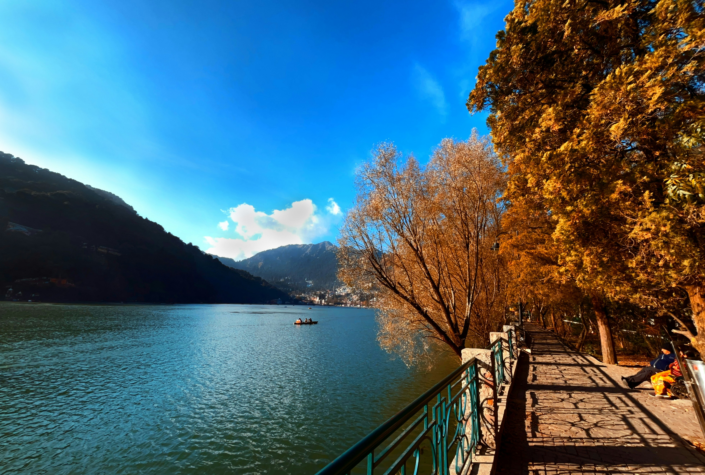
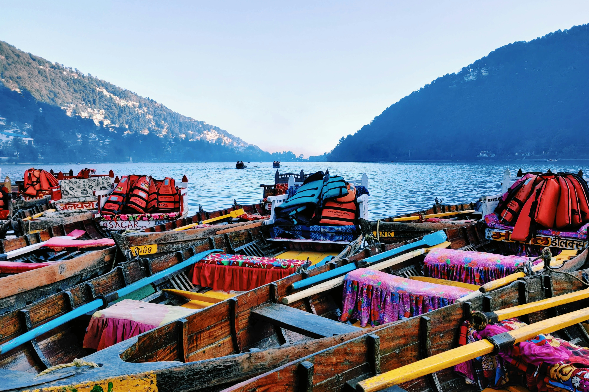
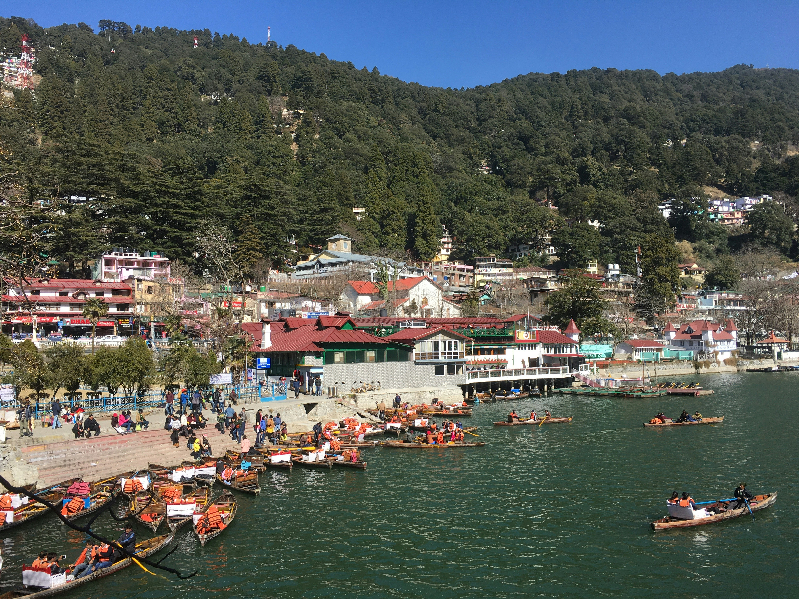
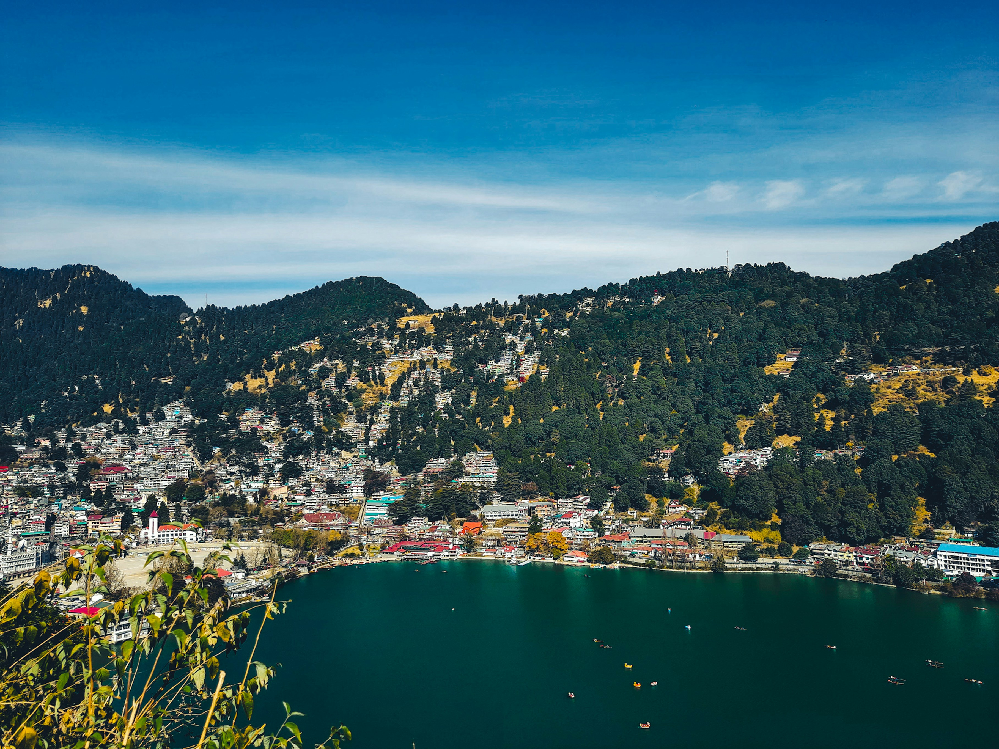
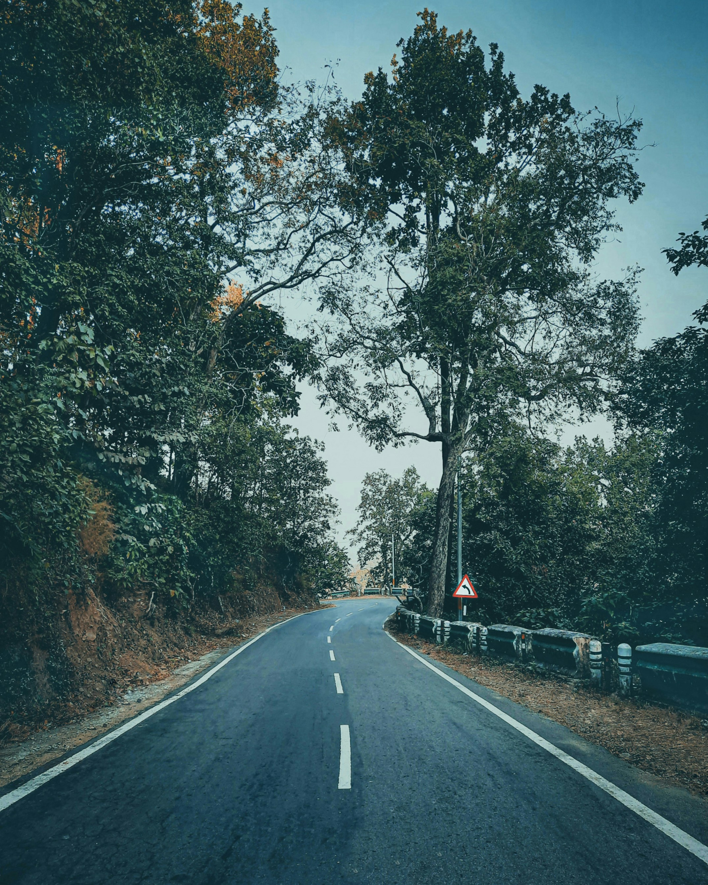
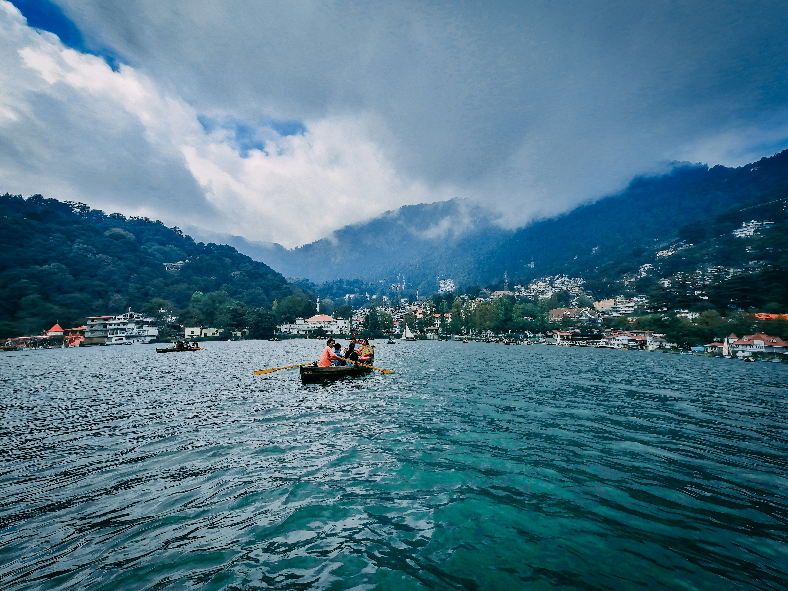

The Turning Point
Some journeys are planned. Some are felt only once you begin.
discover this experience
Some journeys are planned. Some are felt only once you begin.
discover this experience
This journey is designed to experience Nainital the way it's often missed slowly, through its quieter roads, lakeside stretches, and local spaces best explored on a cycle. What begins as a relaxed ride through the town gradually shifts in pace and intent as the route leads toward Kainchi, a place known for its sense of calm and clarity. The experience is not about covering distance, but about how you move through it because when you slow down, you begin to notice more, feel more, and often return with more than you expected.
View Journey Details
2D/1N
10 Cyclists
2 of 5 (Moderate-Easy)
Nainital
Nainital
11th April & 12th April
Contact Us
Cycling
14+
Our carefully planned journey ensures you experience Nainital and Kainchi Dham at its most authentic. Click on each item to see details.
We begin with a relaxed arrival and breakfast, giving you time to settle in before we start our ride later in the day. Setting out at an easy pace, we first move along the lakeside, taking in Nainital up close before stopping to try some local food along the way. From here, the ride gradually shifts into quieter forest roads. We then pause for a short hike up to Tiffin Top, taking in the views and spending some time at the top, before making our way back to the starting point as the day winds down.
We start early in the morning, setting out while the roads are still quiet. The ride takes us downhill from Nainital toward Kainchi Dham, covering a scenic stretch of around 25 km. Moving through forested roads and gentle bends, the journey feels easy and steady, allowing you to take in the surroundings along the way.
At Kainchi Dham, we spend time at the temple, walking through the space and taking a pause before sitting down for a simple breakfast nearby. After this, we begin our return, riding back toward the starting point at a comfortable pace, carrying the calm of the morning with us.






The Event Terms and Conditions detailed below apply to all participants of 'Ride To Kainchi Dham' as well as attendees or participants (herein after called "Participant") participating in any of Cycle Culture's ("organizer", "we", "us", "our") cycling events.
By registering for this event, you agree to abide by all terms and conditions set forth below. The organizer reserves the right to modify these terms at any time without prior notice.
Participants must complete the registration process and pay the full event fee to secure their spot.
All participants must be at least 14 years of age at the time of the event. Those under 18 must be accompanied by a parent or legal guardian.
The organizer reserves the right to refuse entry to any participant who does not meet the requirements or fails to provide necessary documentation.
Participants will be provided with cycles and basic safety gear including helmets.
Helmets are mandatory for all participants during cycling activities. Participants are encouraged to bring personal cycling gloves and attire for comfort.
The organizer is not responsible for any damage to personal equipment during the event.
Participants should be comfortable with moderate cycling (25-30km per day) and short hikes (Tiffin Top).
Participants with pre-existing medical conditions must consult their physician before participating and inform the event organizers.
The organizer reserves the right to remove any participant from activities if they appear to be physically unable to continue or pose a risk to themselves or others.
Participants must respect local customs and traditions, especially at Kainchi Dham and other sacred sites visited during the journey.
Appropriate modest clothing is required for temple visits. Photography restrictions at certain sites must be observed.
We follow Leave No Trace principles — please carry back any waste and respect the natural environment.
Cancellations made more than 14 days prior to the event will receive a full refund.
Cancellations made 7-14 days prior will receive a 50% refund.
No refunds will be issued for cancellations made less than 7 days before the event.
The organizer reserves the right to cancel the event due to unforeseen circumstances (extreme weather, road closures, etc.). In such cases, participants will receive a full refund or option to reschedule.
By participating, each participant acknowledges that cycling and outdoor activities involve inherent risks. Participants agree to release Cycle Culture and its guides from any liability for injuries, damages, or losses arising from participation, except in cases of gross negligence.
A detailed liability waiver must be signed before the start of the tour.